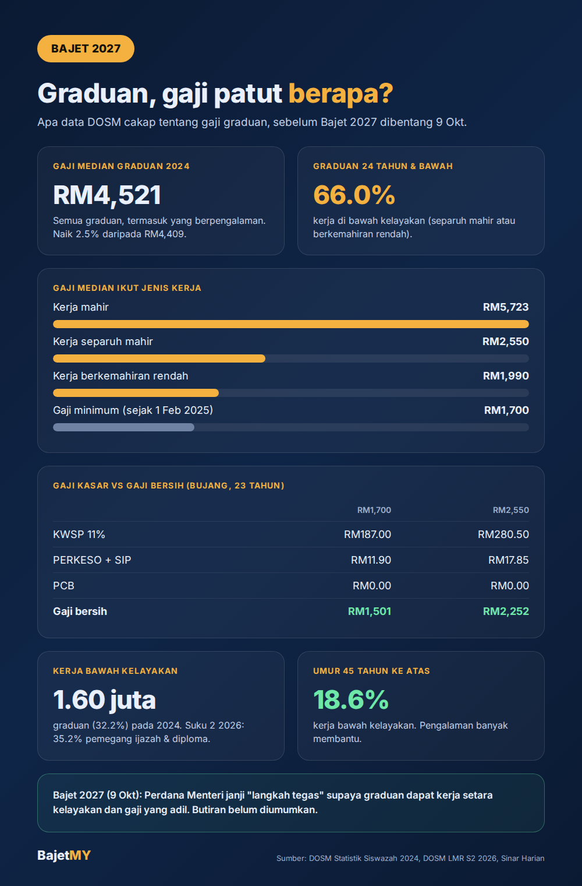

Pada 26 September 2026 di UiTM Shah Alam, Perdana Menteri Anwar Ibrahim berkata Bajet 2027 akan membawa "langkah tegas" supaya graduan dapat kerja yang setara dengan kelayakan dan gaji yang adil. Katanya, "produktiviti terus meningkat, tapi kadar upah itu meningkat sedikit sahaja."
Bajet 2027 dibentangkan pada 9 Oktober 2026. Sebelum tu, jom tengok apa yang data rasmi cakap tentang gaji graduan.

Gaji median graduan RM4,521, tapi tak semua dapat
Menurut Statistik Siswazah 2024 oleh Jabatan Perangkaan Malaysia (DOSM), gaji median bulanan graduan ialah RM4,521 (naik 2.5% daripada RM4,409 pada 2023). Gaji purata pula RM5,330.
Tapi angka ni merangkumi semua graduan, termasuk yang dah bekerja 10 atau 20 tahun. Bila dipecahkan ikut jenis kerja, ceritanya lain:
| Jenis pekerjaan | Gaji median sebulan |
|---|---|
| Kerja mahir | RM5,723 |
| Kerja separuh mahir | RM2,550 |
| Kerja berkemahiran rendah | RM1,990 |
Untuk perbandingan, gaji minimum di Malaysia ialah RM1,700 sebulan sejak 1 Februari 2025.
Dua daripada tiga graduan muda kerja bawah kelayakan
Ini angka yang paling ramai tak perasan. DOSM mengukur guna tenaga tidak penuh berkaitan kemahiran, iaitu graduan yang bekerja dalam jawatan separuh mahir atau berkemahiran rendah.
- Pada 2024, 1.60 juta graduan (32.2%) bekerja di bawah kelayakan mereka.
- Bagi graduan berumur 24 tahun dan ke bawah, kadarnya 66.0%. Maksudnya, lebih kurang dua daripada tiga graduan muda.
- Bagi yang berumur 45 tahun ke atas, kadarnya hanya 18.6%.
- Data suku kedua 2026 menunjukkan kadar untuk pemegang ijazah dan diploma ialah 35.2%, lebih satu pertiga.
Gaji kasar vs gaji bersih
Gaji yang ditawarkan bukan gaji yang masuk akaun. Contoh untuk graduan bujang berumur 23 tahun, dikira guna Kalkulator Gaji Bersih:
| Gaji RM1,700 | Gaji RM2,550 | |
|---|---|---|
| KWSP (11%) | RM187.00 | RM280.50 |
| PERKESO | RM8.50 | RM12.75 |
| SIP (EIS) | RM3.40 | RM5.10 |
| PCB | RM0.00 | RM0.00 |
| Gaji bersih | RM1,501.10 | RM2,251.65 |
Jadi graduan dalam kerja separuh mahir, dengan gaji median RM2,550, bawa balik lebih kurang RM2,252 sebulan. Itu sebelum sewa, kereta, PTPTN dan makan.
Tbf: bukan semua salah majikan
Isu gaji graduan ada beberapa lapis:
- Graduan muda memang ramai mula dari bawah. DOSM sendiri menyebut graduan baharu sering terima kerja di bawah kelayakan untuk dapat pengalaman dulu, dan kadarnya jatuh dengan ketara bila umur meningkat.
- Bidang pengajian dan kemahiran penting. Kerja mahir mencatat gaji median RM5,723, lebih dua kali ganda kerja separuh mahir.
- Lokasi pun memberi kesan. Gaji median graduan tertinggi di Kuala Lumpur (RM5,888), Putrajaya (RM5,723) dan Selangor (RM5,207).
Tapi ada juga kebenaran dalam kata-kata Perdana Menteri: kalau produktiviti naik tapi gaji tak ikut, ada sesuatu yang perlu dibetulkan. Itu yang ramai tunggu dalam Bajet 2027.
Apa yang perlu diperhatikan dalam Bajet 2027
Kerajaan belum mendedahkan butiran. Antara yang boleh diperhatikan pada 9 Oktober:
- Langkah untuk gaji graduan atau gaji permulaan, termasuk apa-apa insentif kepada majikan.
- Peruntukan khusus untuk belia, yang turut dibayangkan oleh Perdana Menteri.
- Program latihan semula atau peningkatan kemahiran untuk graduan yang bekerja di bawah kelayakan.
Apa yang korang boleh buat sekarang
- Kira gaji bersih sebelum terima tawaran. Bandingkan tawaran ikut gaji bawa balik, bukan gaji kasar.
- Tengok laluan kenaikan, bukan gaji permulaan saja. Kerja separuh mahir dengan laluan ke jawatan mahir lebih baik daripada kerja buntu dengan gaji sedikit lebih tinggi.
- Bajet ikut gaji bersih. Gunakan peraturan 50/30/20 pada RM2,252, bukan RM2,550.
Ringkasan
Gaji median graduan RM4,521, tapi angka tu disumbang ramai graduan berpengalaman. Untuk graduan muda, dua daripada tiga bekerja di bawah kelayakan, dan gaji median kerja separuh mahir RM2,550 tinggal lebih kurang RM2,252 selepas potongan. Bajet 2027 dijanjikan membawa langkah tegas untuk gaji graduan. Kita tengok pada 9 Oktober.
Sumber
- Jabatan Perangkaan Malaysia (DOSM): Statistik Siswazah 2024, dikeluarkan 31 Oktober 2025
- Jabatan Perangkaan Malaysia (DOSM): Labour Market Review, Suku Kedua 2026, dikeluarkan 27 Ogos 2026
- Sinar Harian: Belanjawan 2027, kerajaan bakal umum langkah tegas pastikan gaji yang adil (26 September 2026)
- Perintah Gaji Minimum: RM1,700 berkuat kuasa 1 Februari 2025
- Kalkulator Gaji Bersih Bajet MY: kadar KWSP, PERKESO, SIP dan PCB